1과목: 응용역학
1. 그림과 같은 양단 고정보에서 지점 B를 반시계반향으로 1rad 만큼 화전시켰을 때 B점에 발생하는 단 모멘트의 값이 옳은 것은?
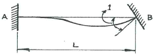
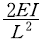
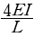
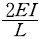
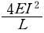
2. 아치축선이 포물선인 3활절아치가 그림과 같이 등 분포하중을 받고 있을 때, 지점 A의 수평반력은?
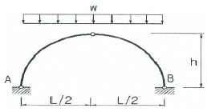
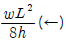
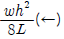
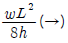
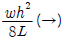
3. 다음 그림과 같은 양단고정인 보가 등분포하중w를 받고 있다. 모멘트가 0이 되는 위치는 지점부터 A부터 약 얼마 떨어진 곳에 있는가? (단, EI는 일정하다.)
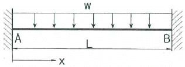
4. 길이가 8m이고 단면이 3cm×4cm인 직사각형 단면을 가진 양단 고정인 장주의 중심축에 하중이 작용할 때 좌굴응력은 약 얼마인가? (단, E=2×106kg/cm2이다.)
5. 직경 d인 원형단면 기둥의 길이가 4m이다. 세장비가 100이 되도록 하려면 이 기둥의 직경은?
6. 그림과 같은 단순보에서 휨모멘트에 의한 탄성 변형에너지는? (단, EI는 일정하다.)
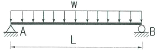
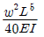
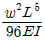
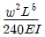
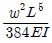
7. 아래 그림과 같은 봉에 작용하는 힘들에 의한 봉 전체의 수직처짐의 크기는?
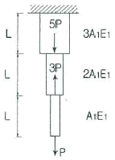
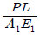
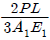
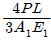
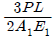
8. 아래 그림과 같은 보에서 A점의 휨 모멘트는?
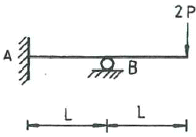
9. 그림과 같은 사다리꼴의 도심 G의 위치 y 로 옳은 것은?(오류 신고가 접수된 문제입니다. 반드시 정답과 해설을 확인하시기 바랍니다.)
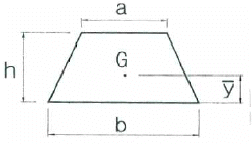
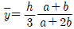
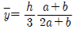
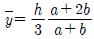
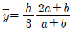
10. 그림과 같은 구조물에 하중 W가 작용할 때 P의 크기는? (단, 0°<α<180°이다.)
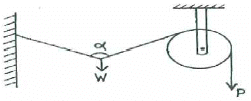
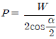
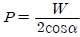
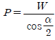
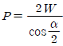
11. 그림과 같은 게르버보의 E점(지점 C 에서 오른쪽으로 10m떨어진 점)에서의 휨모멘트 값은?
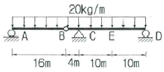
12. 다음 그림에서 지점 A와 C에서의 반력을 각각 RA 와 RC 라고 할 때, R4 의 크기는?(오류 신고가 접수된 문제입니다. 반드시 정답과 해설을 확인하시기 바랍니다.)
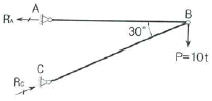
13. 평면응력을 받는 요소가 다음고 k같이 응력을 받고 있다. 최대 주응력은?
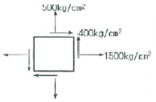
14. 그림과 같이 속이 빈 원형단면(빗금친 부분)의 도심에 대한 극관성 모멘트는?
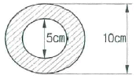
15. 그림과 같은 정정 트러스에서 D1부재(AC)의 부재력은?
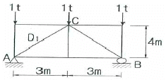
16. 그림과 같이 길이 20m인 단순보의 중앙점 아래 1cm 떨어진 곳에 지점 C가 있다. 이 단순보가 등분포하중 w=1t/m를 받는 경우 지점 C의 수직반력 Rcy는? (단, EI-2.0×1012 kg·cm2 이다.)
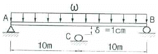
17. 탄성계수는 2.3×106 kg/cm2, 프와송비는 0.35 일 때 전단 탄성계수의 값을 구하면?
18. 그림과 같은 T형 단면을 가진 단순보가 있다. 이 보의 지간은 3m이고, 지점으로부터 1m떨어진 곳에 하중 P=450kg이 작용하고 있다. 이 보에 발생하는 최대 전단응력은?
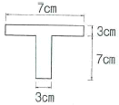
19. 그림과 같은 보에서 최대 처짐이 발생하는 위치는? (단, 부재의 EI는 일정하다.)
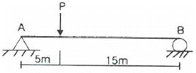
20. 그림과 같은 단순보의 최대전단응력(τmax)를 구하면? (단, 보의 단면은 지름이 D인 원이다.)
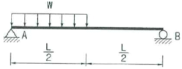
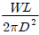
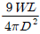
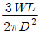
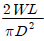
2과목: 측량학
21. 사진측량의 입체시에 대한 설명으로 틀린 것은?
22. 다음 설명 중 틀린 것은?
23. GPS 구성 부문 중 위성의 신호 상태를 점검하고, 궤도 위치에 대한 정보를 모니터링 하는 임무를 수행하는 부문은?
24. 표고 h=326.42m인 지대에 설치한 기선의 길이가 L=500m 일 때 평균해면상의 보정량은? (단, 지구 반지름 R=6367km 이다.)
25. 지오이드(Geoid)에 대한 설명으로 옳은 것은?
26. GNSS 위성측량시스템으로 틀린 것은?
27. 삼각측량에서 시간과 경비가 많이 소요되나 가장 정밀한 측량성과를 얻을 수 있는 삼각망은?
28. 수평 및 수직거리를 동일한 정확도로 곽측하여 육면채의 채적을 3000m3로 구하였다. 체적계산의 오차를 0.6m3 이하로 하기 위한 수평 및 수직거리 관측의 최대 허용 정확도는?
29. 축척 1:5000의 지형도 제작에서 등고선 위치오차가 ±0.3mm, 높이 관측오차가 ±0.2mm로 하면 등고선 간격은 최소한 얼마 이상으로 하여야 하는가?
30. 클로소이드곡선에 관한 설명으로 옳은 것은?
31. 지형도의 이용법에 해당되지 않는 것은?
32. 수면으로부터 수심(H)의 0.2H, 0.4H, 0.6H, 0.8H 지점의 유속(V0.2, V0.4, V0.6, V0.8)을 관측하여 평균유속을 구하는 공식으로 옳지 않은 것은?
33. 직사각형 토지를 줄자로 특정한 결과가 가로 37.8m, 세로 28.9m 이었다. 이 줄자는 표준길이 30m당 4.7cm가 늘어있었다면 이 토지의 면적 최대 오차는?
34. 그림과 같이 2회 관측한 ∠AOB의 크기는 21°36' 28“. 3회 관측한 ∠BOC는 63°18' 45” 6회 관측한 ∠AOC는 84°54' 37“ 일 때 ∠AOC의 최확값은?
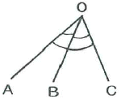
35. 그림과 같은 반지름=50m인 원곡선을 설치하고자 할 때 접선거리 AI 상에 있는 HC 의 거리는? (단, 교각=60° , α=20° , ∠AHC=90°)
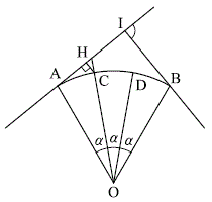
36. 항공사진상에 굴뚝의 윗부분이 주점으로부터 80mm 떨어져 나타났으며 굴뚝의 길이는 10mm 이었다. 실제 굴뚝의 높이가 70m라면 이 사진의 촬영고도는?
37. 수준측량에서 전·후시의 거리를 같게 취해도 제거되지 않는 오차는?
38. 노선에 곡선반지름 R=600m인 곡선을 설치할 때, 현의 길이 L=20m에 대한 편각은?
39. 거리는 2.0km에 대한 양차는? (단, 굴절계수 k는 0.14, 지구의 반지름은 6370km이다.)
40. 다각측량에서 토털스테이션의 구심오차에 관한 설명으로 옳은 것은?
3과목: 수리학 및 수문학
41. 단위유량도에 대한 설명 중 틀린 것은?
42. 물의 순환과정인 증발에 관한 설명으로 옳지 않은 것은?
43. 관망(pipe network) 계산에 대한 설명으로 옳지 않은 것은?
44. 강우 강도 I=
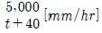
로 표시되는 어느 도시에 있어서 20분 간의 강우량 R20은? (단, t의 단위는 분이다.)45. 그림과 같은 수로의 단위촉당 유량은? (단, 유출계수 C=1이며 이외 손실은 무시함)
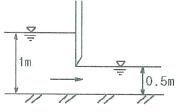
46. 경심이 5m이고 동수경사가 1/200인 관로에서 Reynolds 수가 1000인 흐름의 평균유속은?
47. 그림과 같이 물속에 수직으로 설치된 2m×3m 넓이의 수문을 올리는 데 필요한 힘은? (단, 수문의 물속 무게는 1960N이고, 수문과 벽면 사이의 마찰계수는 0.25이다.)
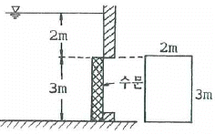
48. 강수량 자료를 해석하기 위한 DAD해석 시 필요한 자료는?
49. 단위무게 5.88kN/m3. 단면 40cm×40cm, 길이 4m인 물체를 물속에 완전히 가라앉히려 할 때 필요한 최소 힘은?
50. 원형관의 중앙에 피토관(Point tube)을 넣고 관벽의 정수압을 측정하기 위하여 정압관과의 수면차를 측정하였더니 10.7m 이였다. 이 때의 유속은? (단, 피토관 상주 C=1 이다.)
51. 위어(weir)에 관한 설명으로 옳지 않은 것은?
52. 유선(streamline)에 대한 설명으로 옳지 않은 것은?
53. 다음의 손실계수 중 특별한 형상이 아닌 경우, 일반적으로 그 값이 가장 큰 것은?
54. 다음 설명중 기저유출에 해당되는 것은?
55. 개수로에서 일정한 단면적에 대하여 최대유량이 흐르는 조건은?
56. 폭이 1m인 직사각형 개수로에서 0.5m3/s의 유량이 80cm의 수심으로 흐르는 경우, 이 흐름을 가장 잘 나타낸 것은? (단, 동점성 계수는 0.012cm2/s, 한계수심은 29.5cm이다.)
57. 직각 삼각형 위어에서 월류수심의 측정에 1%의 오차가 있다고 하면 유량에 발생하는 오차는?
58. 다음중 부정류 흐름의 지하수를 해석하는 방법은?
59. Darcy의 법칙에 대한 설명으로 옳은 것은?
60. 흐르는 유체 속에 물체가 있을 때, 물차게 유체로부터 받는 힘은?
4과목: 철근콘크리트 및 강구조
61. 철근콘크리트 1방향 슬래브의 설계에 대한 설명 중 틀린 것은?
62. 아래와 같은 맞대기 이음부에 발생하는 응력의 크기는? (단, P=360kN, 강판두께 12mm) (문제 오류로 문제가 정확하지 않습니다. 문제 내용을 아시는분께서는 오류 신고를 통하여 보기 내용 작성 부탁 드립니다. 정답은 4번 입니다.)
63. 아래 그림과 같은 복철근 직사각형 보의 공칭휨 모멘트 강도 Mn은? (단, fck=28MPa, fy=350MPa, As=4500mm2,As'=1800mm2 이며 압축, 인장철근 모두 항복한다고가정한다
64. 그림과 같은 띠철근 단주의 균형상태에서 축방향 공칭하중(Pb)은 얼마인가? (단, fck=27MPa, fy=400MPa, Ast=4-D35=3800mm2)
65. 직사각형 단면의 보에서 계수 전단력 Vu=40kN을 콘크리트만으로 지지하고자 할 때 필요한 최소 유효깊이(d)는? (단, fck=25MPa이고, bw =300mm이다.)
66. 아래 표와 같은 조건에서 처짐을 계산하지 않는 경우의 보의 최소 두께는 약 얼마인가?
67. 압축 철근비가 0.01 이고, 연장철근비가 0.003인 철근콘크리트보에서 장기 추가처짐에 대한 계수(rΔ)의 값은? (단, 하중재하기간은 5년6개월 이다.)
68. 다음 그림과 같이 W=40kN/m 일 때 PS 강재가 단면 중심에서 긴장되며 인장측의 콘크리트 응력이 “0”이 되려면 PS 강재에 얼마의 긴장력이 작용하여야 하는가?
69. 강도설계법에서 인장철근 D29(공칭 직경 dp=28.66mm)을 정착시키는 데 소요되는 기본 정착길이는? (단, fck =24MPa, fy =300MPa으로 한다.)
70. 아래 그림과 같은 직사각형 단면의 균열모멘트(Mcr)는? (단, 보통중량 콘크리트를 사용한 경우로서, fck=21MPa, As=4800mm2)
71. 아래 그림과 같은 단철근 직사각형 보에서 설계휨강도 계산을 위한 강도감소계수(ø)는? (단, fck=35MPa, fy=400MPa, As=3500mm2)
72. 인장 이형철근의 정착길이 산정 시 필요한 보정계수에 대한 설명을 틀린 것은? (단, fsp는 콘크리트의 쪼갬인장강도)
73. PSC 보를 RC 보처럼 생각하여, 콘크리트는 압축력을 받고 긴장재는 인장력을 받게 하여두 힘의 우력 모멘트로 외력에 의한 휨모멘트에 저항시킨다는 생각은 다음 중 어느 개념과 같은가?
74. 직접 설계법에 의한 슬래브 설계에서 전체 정적계 수 휨모멘트 M0=340kN·m로 계산되었을 때, 내부 경간의 부계수 휨모멘트는 얼마인가?
75. 경간 25m인 PS콘크리트 보에 계수하중 40kN/m이 작용하고, P=2500kN의 프리스트레스가 주어질때 등분포 상향력 u를 하중평형(Balanced Load) 개념에 의해 계산하여 이보에 작용하는 순수하향 분포하중을 구하면?
76. 직사각형 단면(300×400mm)인 프리텐션 부재에 550mm2의 단면적을 가진 PS강전을 콘크리트 단면 도심에 일치하도록 배치하였다. 이때 1350MPa의 인장응력이 되도록 긴장한 후 콘크리트에 프리스트레스를 도입한 경우 도입직후 생기는 PS강선의 응력은? (단, n=6, 단면적은 총단면적 사용)
77. 인장응력 검토를 위한 L-150×90×12 인 형강(angle)의 전개 총폭 bg는 얼마인가?
78. 프리스트레스트 콘크리트 구조물의 특정에 대한 설명으로 틀린 것은??
79. 1방향 철근콘크리트 슬래브의 전체 단면적이 2000000mm2이고, 사용한 이형 철근의 설계기준 항복강도가 500MPa인 경우, 수축 및 온도철근량 의 최소값은?
80. 그림과 같은 원형철근기둥에서 콘크리트구조설계 기준에서 요구하는 최대나선철근의 간격은 약 얼마인가? (단, fck=24MPa, fsyt=400MPa, D10 철근의 공칭 단면적은 71.3mm2이다.)
5과목: 토질 및 기초
81. 두께가 4미터인 점토층이 모래층사이에 끼어있다. 점토층에 3t/m2의 유효응력이 작용하여 최종침하량이 10cm가 발생하였다. 실내압밀시험결과 측정된 압밀계수( Cv)=2×10-4cm2/sec라고 할 때 평균 압밀도 50%가 될 때까지 소요일수는?
82. 그림과 같은 지반에서 유효응력에 대한 점착력 및 마찰각이 각각 c'=1.0t/m2. ø′=20°일 때, A 점에서의 전단강도(t/m2)는?
83. 연약한 점성토의 지반특성을 파악하기 위한 현장 조사 시험방법에 대한 설명 중 틀린 것은?
84. 흙의 분류에 사용되는 Casagrande 소성도에 대한 설명으로 틀린 것은?
85. 흙의 다짐에 있어 램머의 중량이 2.5kg, 낙하고 30cm, 3층으로 각층 다짐횟수가 25회 일 때 다짐에너지는? (단, 몰드의 체적은 1000cm3이다.)
86. 수평방향투수계수가 0.12cm/sec이고, 연직방향 투수계수가 0.03cm/sec 일 때 1일 침투유량은?
87. 다음 그림에서 C점의 압력수두 및 전수두 값은 얼마인가?
88. 그림과 같이 흙입자가 크기가 균일한 구(직경:d)로 배열되어 있을 때 간극비는?
89. 표준관입시험(S.P.T)결과 N치가 25 이었고, 그때 채취한 교란시료로 입도시험을 한 결과 입자가 둥글고, 입도분포가 불량할 때 Dunham공식에 의해서 구한 내부 마찰각은?
90. 콘크리트 말뚝을 마찰말뚝으로 보고 설계할 때, 총 연적하중을 200ton, 말뚝 1개의 극한지지력을 89ton, 안전율을 2.0으로 하면 소요말뚝의 수는?
91. 점착력이 1.4t/m2, 내부마찰각이 30°, 단위중량이 1.85t/m3인 흙에서 인장균열 깊이는 얼마인가?
92. 다음 중 사면의 안정해석 방법이 아닌 것은?
93. 간극률 50%이고, 투수계수가 9×10-2cm/sec인 지반의 모관 상승고는 대략 어느 값에 가장 가까운가? (단, 흙입자의 형상에 관련된 상수 C=0.3cm2, Hazen공식:k=C1×에서 c1=100으로 가정)
94. 흙의 다짐에 대한 설명으로 틀린 것은?
95. 그림과 같은 지층단면에서 지표면에 가해진 5t/m2의 상재하중으로 인한 점토층(정규압밀점도)의 1차압밀 최종침하량(S)을 구하고, 침하량이 5cm일때 평균압밀도(U)를 구하면?
96. 동일한 등분포 하중이 작용하는 그림과 같은 (A)와(B) 두 개의 구형기초판에서 A와 B점의 수직 Z 되는 깊이에서 증가되는 지중응력을 각각 σAσB라 할 때 다음 중 옳은 것은? (단, 지반 흙의 성질은 동일함)
97. 말뚝재하시험 시 연약점토지반인 경우는 pile의 타입 후 20여일이 지난 다음 말뚝재하시험을 한다. 그 이유는?
98. Mohr 응력원에 대한 설명 중 옳지 않은 것은?
99. 최대주응력이 10t/m2, 최소주응력이 4t/m2일 때 최소주응력 면과 45°를 이루는 평면에 일어나는 수직응력은?
100. 폭이 10cm, 두께 3mm인 Paper Drain설계 시 Sand drain의 직경과 동등한 값(등치환산원의 지름)으로 볼 수 있는 것은?
6과목: 상하수도공학
101. 혐기성 소화 공정의 영향인자가 아닌 것은?
102. 합류식 하수도의 시설에 해당되지 않는 것은?
103. 막여과시설의 약품세척에서 무기물질 제거에 사용되는 약품이 아닌 것은?
104. 하수도시설에 관한 설명으로 옳지 않은 것은?
1⑤. 맨홀에 인버트(invert)를 설치하지 않았을 때의 문제점이 아닌 것은?
106. 금속이온 및 염소이온(염화나트륨 제거율 93% 이상)을 제거할 수 있는 막여과공범은?
107. 상수 원수에 포함된 색도 제거를 위한 단위조작으로 거기가 먼 것은?
108. BOD 가 155mg/L인 폐수에서 탈산소계수(K1)가 0.2/day일 때 4일 후에 남아있는 BOD는? (단, 탈산소계수는 상용대수 기준)(오류 신고가 접수된 문제입니다. 반드시 정답과 해설을 확인하시기 바랍니다.)
109. 하수관거의 단면에 대한 설명으로 옳지 않은 것은?
110. BOD 250mg/L의 폐수 30,000m3/day를 활성슬러지법으로 처리하고자 한다. 반응조내의 MLSS 농도가 2,500mg/L, F/M비가 0.5kg BOD/kg MLSS·bay로 처리하고자 하면 BOD 용적부하는?
111. 배수관을 다른 지하매설물과 교차 또는 인접하여 부설할 경우에는 최소 몇 cm 이상의 간격을 두어야 하는가?
112. 급수용 저수지의 필요수량을 결정하기 위한 유량누가곡선도에 대한 설명으로 틀린 것은?
113. 계획인구 150,000명인 도시의 수도계획에서 계획급수인구가 142,500명일 때 1인 1일의 최대급 수량을 450L로 하면 1일 최대급수량은?
114. 상수의 완속여과방식 정수과정으로 옳은 것은?
115. 상수도 계통의 도수시설에 관한 설명으로 옳은 것은?
116. 그림은 펌프특성곡선이다. 펌프의 양정을 나타내는 곡선 형태는?
117. 합류식 하수도는 강우시에 처리되지 않은 오수의 일부가 하천 등의 공공수역에 방류되는 문제점을 갖고 있다. 이에 대한 대책으로 적합하지 않은 것은?
118. 장기 폭기법에 관한 설명으로 옳은 것은?
119. 관로시설의 설계시 계획하수량으로 옳지 않은 것은?
120. 분말활성탄과 입상활성탄의 비교 설명으로 틀린 것은?